Hints that explain themselves
Hinweise, die sich erklären
Each hint says why it appears, which data is behind it and where to click to fix it. Thresholds are set per rule, and a hint can be snoozed until a date.
Jeder Hinweis sagt, warum er erscheint, welche Daten dahinterstehen und wohin du klickst, um ihn zu erledigen. Schwellen stellst du je Regel ein, und ein Hinweis lässt sich bis zu einem Datum zurückstellen.
Freelance numbers
Freelance-Zahlen
Unbilled hours, overdue invoices, utilisation, real hourly rate, a forecast for the year and liquidity, from Kimai and Invoice Ninja. Unbilled time becomes a draft invoice with one click.
Nicht abgerechnete Stunden, überfällige Rechnungen, Auslastung, echter Stundensatz, Jahresprognose und Liquidität, aus Kimai und Invoice Ninja. Offene Zeit wird mit einem Klick zum Rechnungsentwurf.
Homelab at a glance
Homelab auf einen Blick
Proxmox, TrueNAS, Uptime Kuma, Glances, Borg, Pi-hole, Immich, Home Assistant and more. Backups that are too old and certificates that expire show up as hints, not as a red dot you have to spot.
Proxmox, TrueNAS, Uptime Kuma, Glances, Borg, Pi-hole, Immich, Home Assistant und mehr. Zu alte Backups und ablaufende Zertifikate erscheinen als Hinweis, nicht als roter Punkt, den du erst finden musst.
Data that meets
Daten, die sich treffen
Dawarich says you spent six hours at a customer's office, Kimai has nothing booked for that day. Snipe-IT knows a laptop's warranty ends next month. The value is where two services meet.
Laut Dawarich warst du sechs Stunden beim Kunden, in Kimai ist für den Tag nichts gebucht. Snipe-IT weiß, dass die Garantie eines Laptops nächsten Monat endet. Der Mehrwert liegt dort, wo sich zwei Dienste treffen.
Start page like Dashy
Startseite wie Dashy
Links with icons, status checks, search, RSS, clock and weather. Import your Dashy conf.yml and switch over when you are ready.
Links mit Icons, Statusprüfung, Suche, RSS, Uhr und Wetter. Importiere deine Dashy-conf.yml und steig um, wenn du so weit bist.
Edit in the browser
Im Browser bearbeiten
Pick tiles from a gallery with live or demo previews, drag them into place, or edit the YAML in the code view. Every change is kept as a revision.
Kacheln aus einer Galerie mit Live- oder Demo-Vorschau wählen, an ihren Platz ziehen oder das YAML in der Code-Ansicht bearbeiten. Jede Änderung bleibt als Revision erhalten.
Users and teams
Benutzer und Teams
People work apart or share connections, tiles and boards in a team. Rights go down to a single tile, and everyone keeps their own layout.
Personen arbeiten getrennt oder teilen Verbindungen, Kacheln und Boards im Team. Rechte reichen bis zur einzelnen Kachel, und jeder behält sein eigenes Layout.
Tells you, too
Meldet sich auch
Push through Apprise (ntfy, Gotify, Matrix, Telegram and more), a daily digest by mail, a weekly review with an optional AI summary, and an iCal feed for deadlines.
Push über Apprise (ntfy, Gotify, Matrix, Telegram und mehr), ein täglicher Digest per Mail, ein Wochenrückblick mit optionaler KI-Zusammenfassung und ein iCal-Feed für Fristen.
Locked down
Abgesichert
Own login with passkeys, TOTP and OIDC (e.g. authentik). The database file is encrypted, API tokens never reach the browser, and admins must set up a second factor.
Eigene Anmeldung mit Passkeys, TOTP und OIDC (z. B. authentik). Die Datenbankdatei ist verschlüsselt, API-Tokens erreichen nie den Browser, und Admins müssen einen zweiten Faktor einrichten.
What a morning looks like
Wie ein Morgen aussieht
A background run fetches every service at start and then every few minutes. Rules read the same data and write hints. Pages show that stored state, so a board opens at once, even when a service is slow.
Ein Hintergrundlauf holt beim Start und danach alle paar Minuten jeden Dienst ab. Regeln lesen dieselben Daten und schreiben Hinweise. Seiten zeigen diesen gespeicherten Stand, deshalb öffnet ein Board sofort, auch wenn ein Dienst langsam ist.
- Red: act today, e.g. an invoice 12 days overdue
- Yellow: plan it, e.g. 14.5 unbilled hours at one customer
- Blue: good to know, e.g. a certificate that renews in 9 days
- Every rule has its own thresholds and can be switched off
- Rot: heute handeln, z. B. eine Rechnung, die 12 Tage überfällig ist
- Gelb: einplanen, z. B. 14,5 nicht abgerechnete Stunden bei einem Kunden
- Blau: gut zu wissen, z. B. ein Zertifikat, das in 9 Tagen erneuert wird
- Jede Regel hat eigene Schwellen und lässt sich abschalten
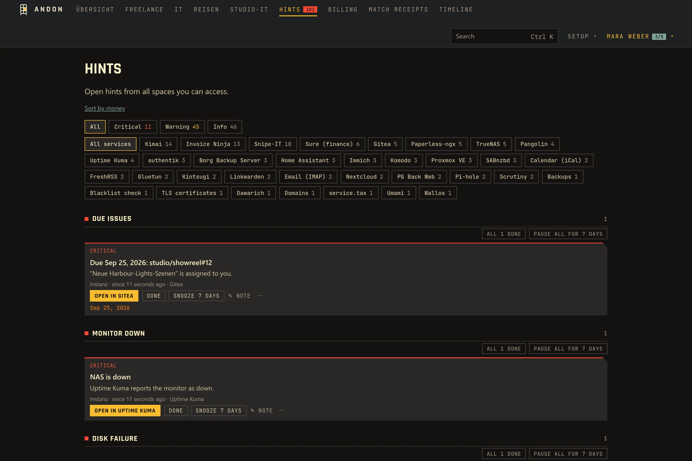
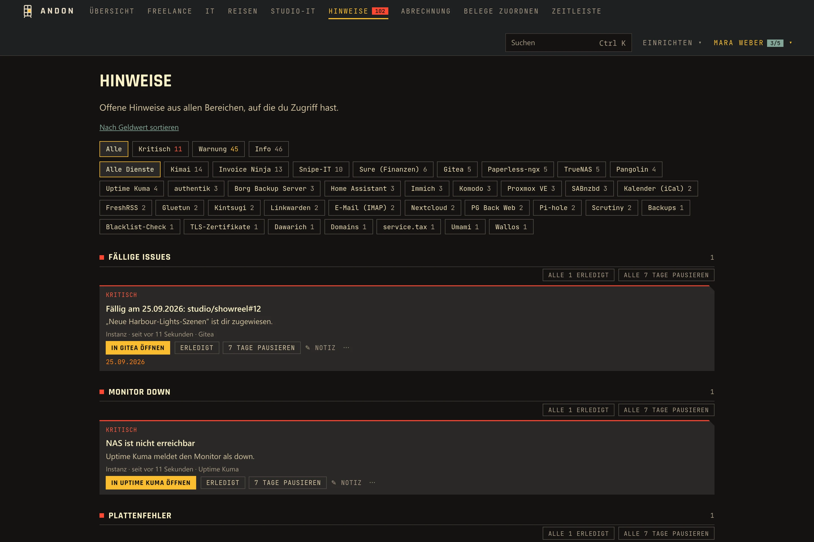
Every expense with its receipt
Jede Ausgabe mit ihrem Beleg
The page “Match receipts” finds the Paperless-ngx scan for each Invoice Ninja expense: by invoice number, amount, date and vendor, each reason shown. You confirm, and Andon writes the link into both sides. Scans that arrive before the expense wait in their own list. This was PaperNinja, which now lives here.
Die Seite „Belege zuordnen“ findet zu jeder Ausgabe in Invoice Ninja den Scan in Paperless-ngx: über Rechnungsnummer, Betrag, Datum und Händler, jeweils mit Begründung. Du bestätigst, und Andon trägt den Link auf beiden Seiten ein. Scans, die vor der Ausgabe kommen, warten in einer eigenen Liste. Das war PaperNinja, das jetzt hier aufgeht.
- Two receipts that add up to one expense are offered together
- Nothing is linked without your click
- Sure matches are confirmed in one go, and a receipt without expense can become one
- Zwei Belege, die zusammen eine Ausgabe ergeben, werden gemeinsam angeboten
- Nichts wird ohne deinen Klick verknüpft
- Sichere Treffer werden auf einmal bestätigt, und aus einem Beleg ohne Ausgabe wird eine
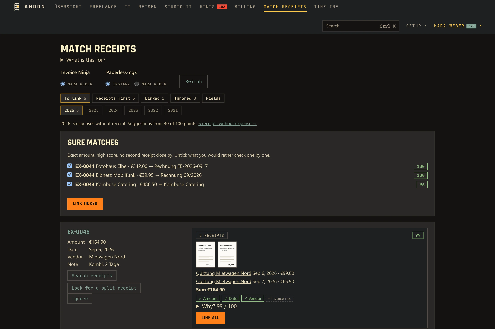
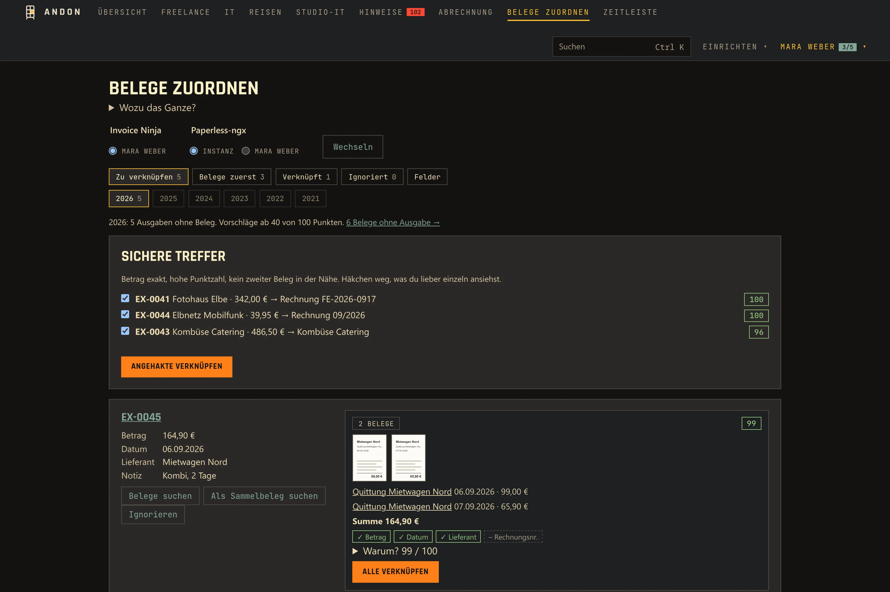
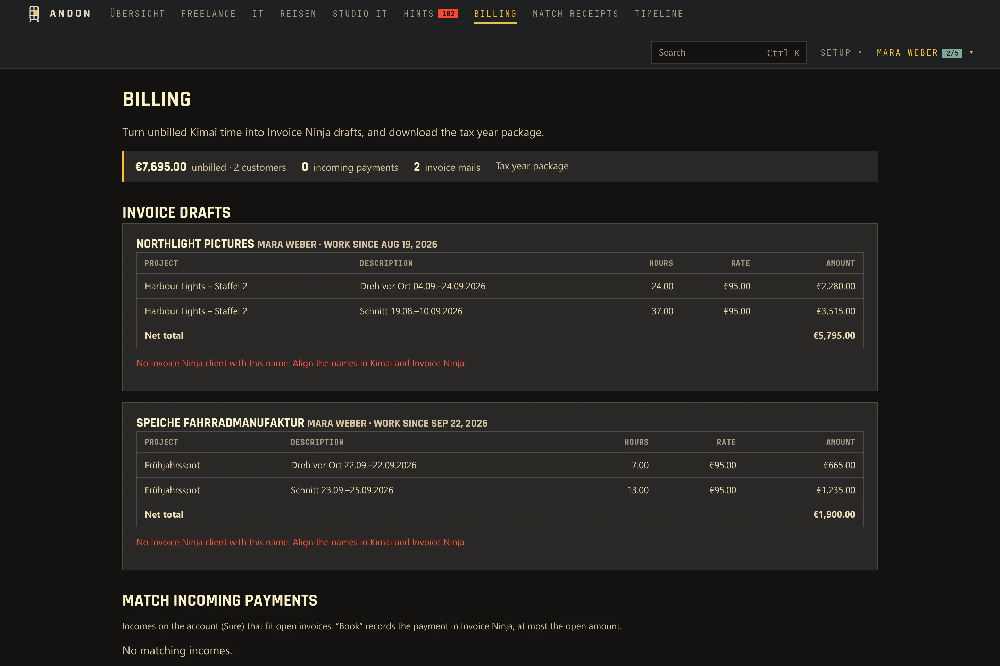
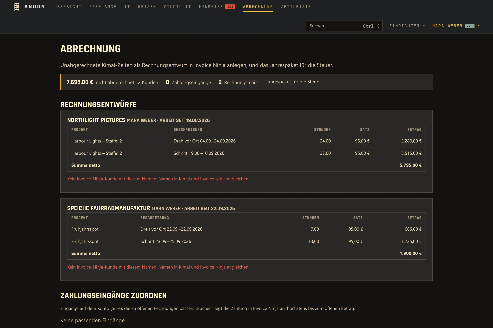
How it works
So funktioniert es
Tiles only display what the server already has. They never call a service from your browser, so no token leaves the container and no CORS proxy is needed.
Kacheln zeigen nur, was der Server schon hat. Sie rufen nie einen Dienst aus deinem Browser auf, deshalb verlässt kein Token den Container, und ein CORS-Proxy ist unnötig.
Services
Dienste
| AreaBereich | ServicesDienste |
|---|---|
| WorkArbeit | Kimai, Invoice Ninja, Snipe-IT, Dawarich, Paperless-ngx, Sure, Firefly III, Ghostfolio, Vikunja, calendars (iCal), mail (IMAP) |
| Homelab | Proxmox, Proxmox Backup Server, TrueNAS, Glances, Scrutiny, Komodo, Homelable (output), Borg, Kopia, Duplicati, Backrest, UrBackup, pgbackweb, Uptime Kuma, Healthchecks, Prometheus, NVD, What's Up Docker, Watchtower, Gitea, GitHub, Drone |
| NetworkNetzwerk | Pi-hole, AdGuard Home, Technitium, Traefik, Caddy, Nginx Proxy Manager, FRITZ!Box, Tailscale, Pangolin, Gluetun, gateway, speed test, domains, certificates, blocklists |
| SecuritySicherheit | authentik, Vaultwarden |
| Media and homeMedien und Zuhause | Immich, Jellyfin/Plex, Tautulli, Jellystat, Navidrome, Audiobookshelf, Jellyseerr/Overseerr, *arr, SABnzbd, Nextcloud, Linkwarden, FreshRSS, Home Assistant, ESPHome, Grocy, Tandoor, Tibber, PeaNUT, apcupsd, OpenDTU, EVCC, DWD weather, Umami |
| Reading and communityLesen und Community | Hacker News, Lobsters, Reddit, YouTube, Twitch, Mastodon, GoToSocial, Akkoma, Lemmy, KDE Store, OpenLigaDB |
| Anything elseAlles andere | Any JSON API, with your own fields and rulesJede JSON-API, mit eigenen Feldern und Regeln |
Install
Installation
- Create a folder with
dataandsecrets, and a master key. Keep the key safe, but not next to your backups: without it the database cannot be opened. Back updata/andon.db.saltwith the database; it is not secret, but needed too. - Download
docker-compose.example.ymlasdocker-compose.ymland setBASE_URL. - Start it, then open
/setupand enter the code from the log.
- Einen Ordner mit
dataundsecretsund einen Hauptschlüssel anlegen. Den Schlüssel sicher aufbewahren, aber nicht neben den Backups: Ohne ihn lässt sich die Datenbank nicht öffnen.data/andon.db.saltmit der Datenbank sichern; nicht geheim, aber ebenso nötig. docker-compose.example.ymlalsdocker-compose.ymlherunterladen undBASE_URLsetzen.- Starten, dann
/setupöffnen und den Code aus dem Log eingeben.
Backups run on a schedule into data/backups. docker compose exec -u 10001 andon andon backup /data/backups writes one now: database, icons and themes in one archive.
Backups laufen nach Zeitplan nach data/backups. docker compose exec -u 10001 andon andon backup /data/backups schreibt sofort eins: Datenbank, Icons und Themes in einem Archiv.
Questions
Fragen
Does it change anything in my services?Ändert es etwas in meinen Diensten?
Almost never. It reads. The exceptions are actions you start yourself: a Kimai timer, a draft invoice in Invoice Ninja, marking billed time as exported.
Fast nie. Es liest. Ausnahmen sind Aktionen, die du selbst auslöst: ein Kimai-Timer, ein Rechnungsentwurf in Invoice Ninja, abgerechnete Zeit als exportiert markieren.
Do I need Kimai or Invoice Ninja?Brauche ich Kimai oder Invoice Ninja?
No. Without them it is a start page for your homelab. Each service is optional, and the gallery shows demo previews for the ones you do not have.
Nein. Ohne sie ist es eine Startseite für dein Homelab. Jeder Dienst ist optional, und die Galerie zeigt Demo-Vorschauen für die, die du nicht hast.
What about the AI summary?Was ist mit der KI-Zusammenfassung?
It is off unless you add an Anthropic API key. It only sends hint counts, no names, amounts or tokens.
Sie ist aus, bis du einen Anthropic-API-Schlüssel hinterlegst. Sie sendet nur die Anzahl der Hinweise, keine Namen, Beträge oder Tokens.
How many users does it handle?Wie viele Benutzer schafft es?
It is built for one to ten people on one instance, with SQLite. A Raspberry Pi is enough.
Es ist für ein bis zehn Personen auf einer Instanz gebaut, mit SQLite. Ein Raspberry Pi reicht.
Changes
Änderungen
What each release brought, newest first. Every release adds an entry here and the same notes on the release page.
Was jede Version gebracht hat, die neueste zuerst. Jede Version bekommt hier einen Eintrag und dieselben Notizen auf der Release-Seite.
-
0.7.0
This release clears the friction a QA round over full user journeys found: fifteen points, each decided with drafts first. On top come a wall display that changes between screen-filling sets, a phone layout, and the IT docs drawn into Homelable.Diese Version räumt die Reibung ab, die eine QA-Runde über ganze Nutzerwege gefunden hat: fünfzehn Punkte, jeder vorher mit Entwürfen entschieden. Dazu kommen eine Wandanzeige, die zwischen bildschirmfüllenden Sätzen wechselt, ein Layout fürs Handy und die IT-Doku als Grafik in Homelable.
NewNeu
- Wall display without scrolling: tiles come in sets that fill one screen, changed with a transition (Kante cut, cross-fade, tile by tile, split-flap, shutter, scan line or all in turn) and an easing of your choice; time, transition and easing in the board settings, with a preview. Every set is at least a third full, so a full set is never followed by a lone tile.Wandanzeige ohne Scrollen: Kacheln kommen in Sätzen, die einen Bildschirm füllen, gewechselt mit einem Übergang (Kante-Schnitt, Überblenden, Kachel für Kachel, Fallblatt, Rollladen, Scanlinie oder alle abwechselnd) und einem Verlauf nach Wahl; Zeit, Übergang und Verlauf in den Board-Einstellungen, mit Vorschau. Jeder Satz ist mindestens zu einem Drittel gefüllt, nie ein voller Satz und danach eine einzelne Kachel.
- Phone layout: a drawer instead of three lines of navigation (54 instead of 294 px before the content), and tables become cards with the amount top right.Handy-Layout: eine Schublade statt drei Zeilen Navigation (54 statt 294 px vor dem Inhalt), und Tabellen werden Karten mit dem Betrag oben rechts.
- Homelable as a view of the IT docs: Andon draws devices, services, networks and dependencies from the Obsidian vault and the compose stacks into its own canvas, sends only changes and never positions, so your layout stays.Homelable als Ansicht der IT-Doku: Andon zeichnet Geräte, Dienste, Netze und Abhängigkeiten aus dem Obsidian-Vault und den Compose-Stacks in einen eigenen Canvas, sendet nur Änderungen und nie Positionen, dein Layout bleibt.
- The docs meet what runs: stacks in the repo but not deployed, deployed stacks without a repo, and notes whose URL, ports or image drift from the compose file or from Komodo.Die Doku trifft, was läuft: Stacks im Repo, aber nicht deployt, deployte Stacks ohne Repo, und Notizen, deren URL, Ports oder Image von der Compose-Datei oder von Komodo abweichen.
- New cross rules: a deploy on red CI, a PBS datastore on a nearly full TrueNAS pool, a UPS whose runtime no longer covers its hosts, and charging costs for business trips (EVCC × rides). The ISP report lists the FRITZ!Box reconnects with their downtime.Neue Querregeln: ein Deploy auf roter CI, ein PBS-Datastore auf einem fast vollen TrueNAS-Pool, eine USV, deren Laufzeit ihre Hosts nicht mehr deckt, und Ladekosten für Dienstfahrten (EVCC × Fahrten). Der ISP-Bericht nennt die FRITZ!Box-Neuverbindungen mit Ausfallzeit.
- From a connection to a tile in one click: "Add to board" in the library, starter tiles on an empty board, and matching tiles offered after a green connection test.Von der Verbindung zur Kachel mit einem Klick: „Auf Board legen“ in der Bibliothek, Startkacheln auf einem leeren Board und passende Kacheln nach einem grünen Verbindungstest.
ImprovedVerbessert
- Hints page with a filter sidebar (levels and services with counts) and "Grouped / Single"; groups only from two hints, all as compact rows. On a phone the first hint starts at 385 instead of 1614 px.Hinweisseite mit Filter-Seitenleiste (Stufen und Dienste mit Zählern) und „Gruppiert / Einzeln“; Gruppen erst ab zwei Hinweisen, alles als kompakte Zeilen. Am Handy beginnt der erste Hinweis bei 385 statt 1614 px.
- Forms keep what you typed when something is refused (never passwords, tokens or codes), also after a stale version, and say "Saved" after a save.Formulare behalten das Getippte, wenn etwas abgelehnt wird (nie Passwörter, Tokens oder Codes), auch bei einer veralteten Fassung, und sagen „Gespeichert“ nach dem Speichern.
- New connection: services in groups with search; test errors translated with cause and link; a new token is tested at once.Neue Verbindung: Dienste in Gruppen mit Suche; Testfehler übersetzt mit Ursache und Link; ein neuer Token wird sofort getestet.
- Money pages name their period and let you choose "12 months / Year / Last year"; year-over-year and seasonal comparisons only with full history; subscriptions as monthly amounts.Geld-Seiten nennen ihren Zeitraum und lassen „12 Monate / Jahr / Vorjahr“ wählen; Vorjahres- und Saisonvergleich nur bei voller Historie; Abos als Monatsbetrag.
- Hosts count their hints as problems; billing names an open draft of the same client; tiles with Sure as partner also read Firefly III.Hosts zählen ihre Hinweise als Probleme; die Abrechnung nennt einen offenen Entwurf desselben Kunden; Kacheln mit Sure als Partner lesen auch Firefly III.
- English throughout: "Instance" and "Bundle", rule titles instead of IDs, a DE/EN switch in the footer of every page, the login included.Englisch durchgehend: „Instance“ und „Bundle“, Regeltitel statt IDs, ein DE/EN-Umschalter im Fuß jeder Seite, auch auf der Anmeldung.
FixedBehoben
- Receipts: tab counters matched their lists only by chance, "Linked: 0" showed as success, the tab was lost after "Create", and deleted expenses went into the tax export.Belege: Reiter-Zähler passten nur zufällig zu den Listen, „Verknüpft: 0“ erschien als Erfolg, der Reiter ging nach „Anlegen“ verloren, und gelöschte Ausgaben landeten im Steuer-Export.
- Fields had no visible keyboard focus on a light ground; htmx copied inline styles that the CSP refused.Felder hatten auf hellem Grund keinen sichtbaren Tastatur-Fokus; htmx kopierte Inline-Styles, die die CSP ablehnte.
- The mileage formula named all business km, though bike rides get no km rate.Die Kilometerformel nannte alle beruflichen km, obwohl Radfahrten keine Pauschale bekommen.
NoteBeachten
- Registration no longer logs in: it answers the same for free and taken addresses, so nobody learns which exist. With mail, a taken address gets "You already have an account".Die Registrierung meldet nicht mehr an: Sie antwortet für freie und vergebene Adressen gleich, damit niemand erfährt, welche es gibt. Mit Mailversand bekommt eine vergebene Adresse „Du hast schon ein Konto“.
- Only admins open the instance settings, connections and bundles of the instance; others see a translated refusal with the reason. Buttons without the right are hidden.Nur Admins öffnen Einstellungen, Verbindungen und Verbünde der Instanz; andere sehen eine übersetzte Ablehnung mit Grund. Knöpfe ohne Recht sind ausgeblendet.
- The database gains three board columns for the wall display (migration 0024, runs at start). Homelable, the Komodo comparison and the new cross rules were tested against fakes and the demo world, not yet against real instances.Die Datenbank bekommt drei Board-Spalten für die Wandanzeige (Migration 0024, läuft beim Start). Homelable, der Komodo-Abgleich und die neuen Querregeln sind gegen Nachbauten und die Demowelt getestet, noch nicht gegen echte Instanzen.
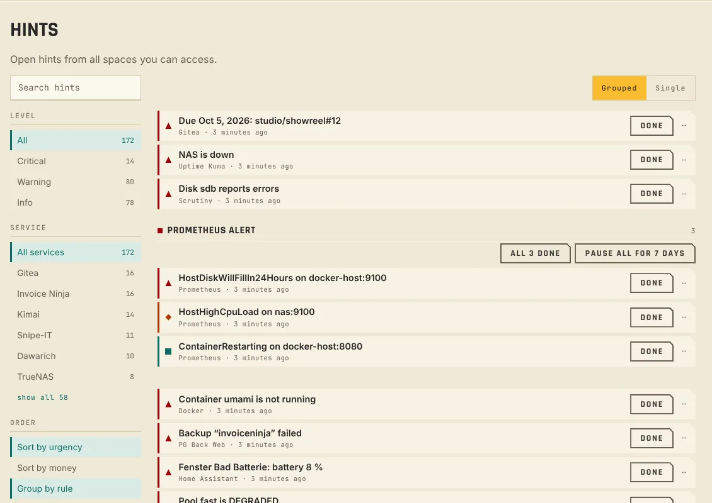
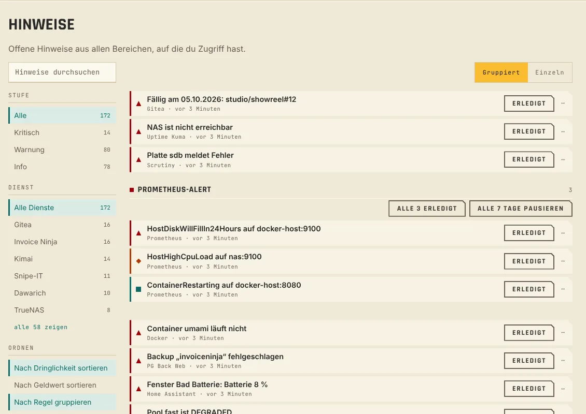
Hints with a filter sidebar (demo data)Hinweise mit Filter-Seitenleiste (Demodaten) 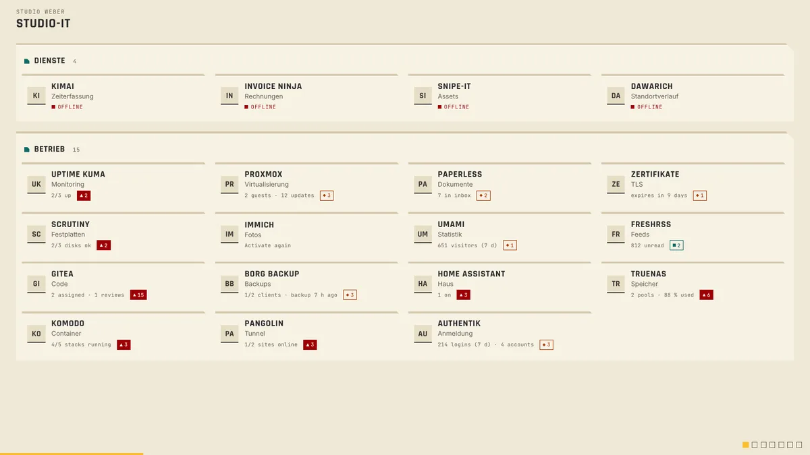
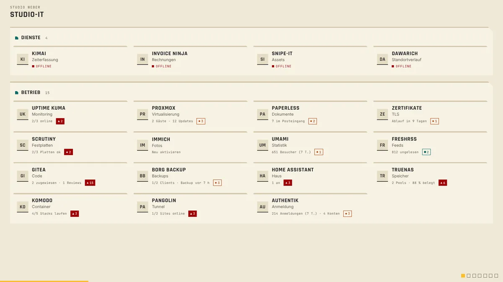
Wall display: one set per screen (demo data)Wandanzeige: ein Satz je Bildschirm (Demodaten) 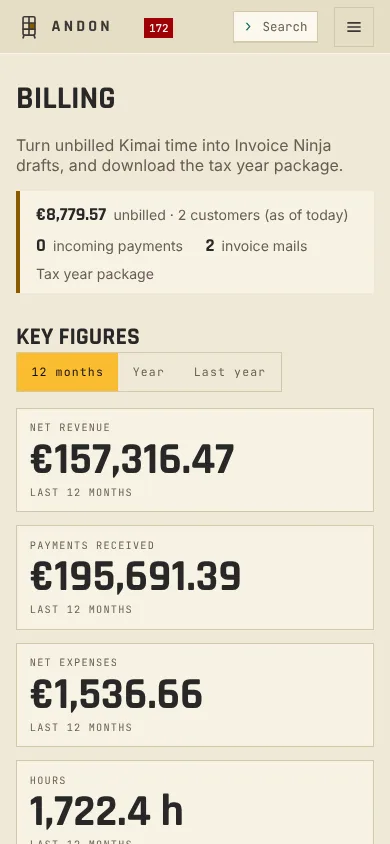
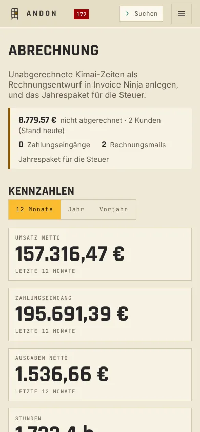
Tables as cards on a phoneTabellen als Karten am Handy 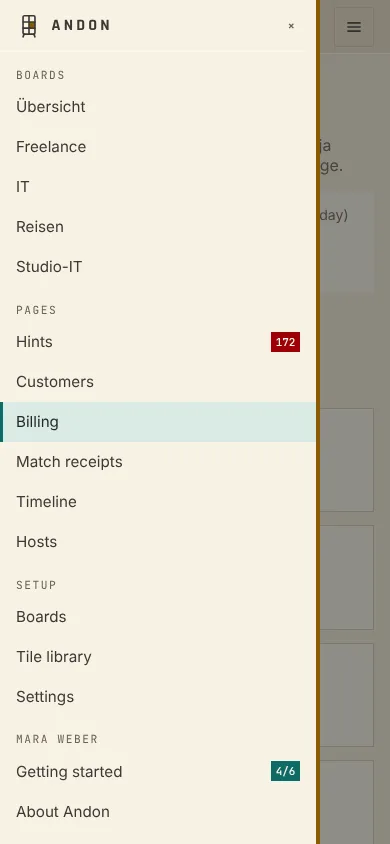
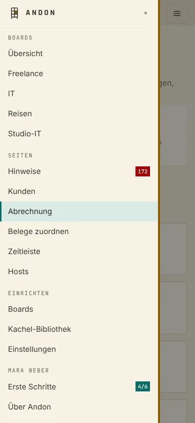
The navigation drawerDie Navigations-Schublade 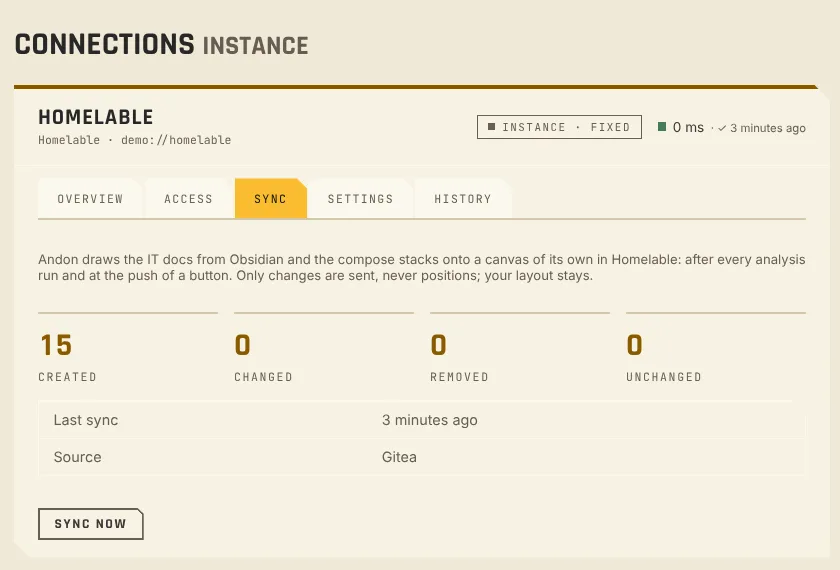
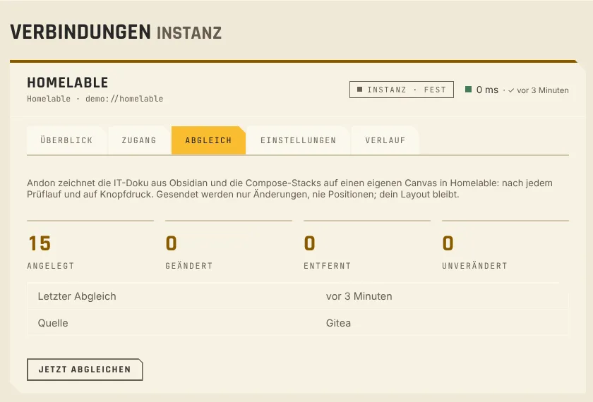
Homelable sync on the connection recordHomelable-Abgleich in der Verbindungsakte 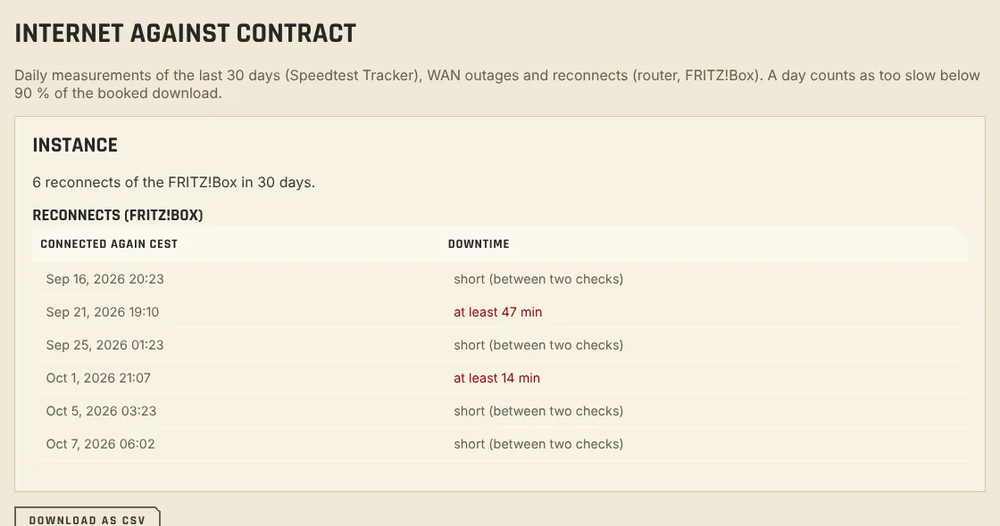
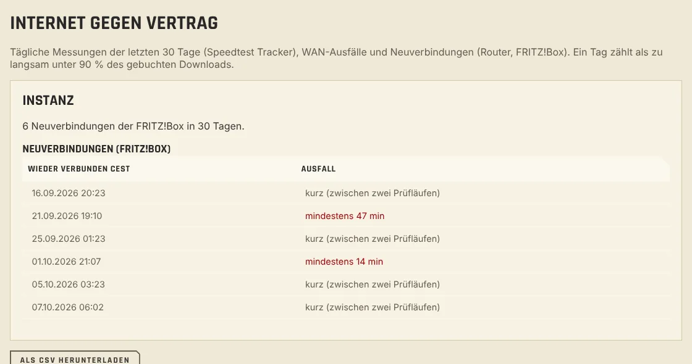
Reconnects in the ISP report (demo data)Neuverbindungen im ISP-Bericht (Demodaten) All changes since 0.6.0 →Alle Änderungen seit 0.6.0 →TilesKachelnin board order, side column includedin Board-Reihenfolge, Seitenspalte inklusivePackPackena set ends before the tile that no longer fitsein Satz endet vor der Kachel, die nicht mehr passtBalanceAusgleichenevery set at least a third of the fullestjeder Satz mindestens ein Drittel des vollstenChangeWechselntransition from Kante 1.20, none with reduced motionÜbergang aus Kante 1.20, keiner bei weniger Bewegung -
0.6.0
Andon now reads 80 services instead of 47, and it checks them against each other: backups against heartbeats, running images against new CVEs, releases against red CI. Connections, boards and settings were reworked, and a QA round over full user journeys fixed what got in the way.Andon liest jetzt 80 Dienste statt 47 und prüft sie gegeneinander: Sicherungen gegen Heartbeats, laufende Images gegen neue CVEs, Releases gegen rote CI. Verbindungen, Boards und Einstellungen wurden überarbeitet, und eine QA-Runde über ganze Nutzerwege hat behoben, was im Weg stand.
NewNeu
- Backups: Proxmox Backup Server, Kopia, Duplicati, Backrest and UrBackup. One backup overview lists the last backup of every item from all tools, problems first.Sicherungen: Proxmox Backup Server, Kopia, Duplicati, Backrest und UrBackup. Eine Backup-Übersicht zeigt die letzte Sicherung jedes Gegenstands aus allen Werkzeugen, Probleme zuerst.
- Monitoring and updates: Healthchecks, Prometheus (alerts become hints, PromQL values become tiles), NVD, Drone with one CI tile for GitHub, Gitea and Drone, What's Up Docker and Watchtower.Überwachung und Updates: Healthchecks, Prometheus (Alerts werden Hinweise, PromQL-Werte Kacheln), NVD, Drone mit einer CI-Kachel für GitHub, Gitea und Drone, What's Up Docker und Watchtower.
- Power, network and home: PeaNUT, apcupsd, OpenDTU, EVCC, Traefik, Caddy, Nginx Proxy Manager, Technitium, FRITZ!Box and ESPHome.Strom, Netz und Zuhause: PeaNUT, apcupsd, OpenDTU, EVCC, Traefik, Caddy, Nginx Proxy Manager, Technitium, FRITZ!Box und ESPHome.
- Media, tasks and money: Tautulli, Jellystat, Navidrome, Audiobookshelf and Jellyseerr/Overseerr with a now-playing tile across all of them; Vikunja, Firefly III and Ghostfolio.Medien, Aufgaben und Geld: Tautulli, Jellystat, Navidrome, Audiobookshelf und Jellyseerr/Overseerr mit einer Kachel „Jetzt läuft“ über alle; Vikunja, Firefly III und Ghostfolio.
- Reading and community: a reading tile for Hacker News, Lobsters, Reddit, YouTube channels and Twitch; Mastodon, GoToSocial, Akkoma and Lemmy; GitHub downloads and trends, KDE Store downloads, sport results.Lesen und Community: eine Lese-Kachel für Hacker News, Lobsters, Reddit, YouTube-Kanäle und Twitch; Mastodon, GoToSocial, Akkoma und Lemmy; GitHub-Downloads und Trends, KDE-Store-Downloads, Sportergebnisse.
- New rules where services meet, for example a heartbeat that is green while its backup is old, a running image hit by a new CVE, a release on red CI, an update on a machine without a backup.Neue Regeln, wo Dienste sich treffen, etwa ein grüner Heartbeat bei alter Sicherung, ein laufendes Image mit neuer CVE, ein Release auf roter CI, ein Update auf einer Maschine ohne Sicherung.
- Rides from Dawarich tracks with real distances, each classified business, commute or private with its reason, for travel costs and the tax export; customers linked across Kimai, Invoice Ninja, Sure and Paperless, with or without a Verbund; IT docs and compose stacks read from Gitea, with a docs coverage tile.Fahrten aus Dawarich-Tracks mit echten Strecken, jede als dienstlich, Arbeitsweg oder privat eingeordnet, mit Grund, für Reisekosten und Steuer-Export; Kunden über Kimai, Invoice Ninja, Sure und Paperless verknüpft, mit oder ohne Verbund; IT-Doku und Compose-Stacks aus Gitea gelesen, mit einer Kachel zur Doku-Abdeckung.
- Admins set mail, Apprise, the AI key, the check interval, session limits and the log level under Setup → Server, without a restart. The digest mail gets its own settings with a preview, a send-now test and a log.Admins stellen Mail, Apprise, den KI-Schlüssel, den Prüftakt, Sitzungsgrenzen und die Log-Stufe unter Einrichten → Server ein, ohne Neustart. Die E-Mail-Zusammenfassung bekommt eigene Einstellungen mit Vorschau, Sofort-Test und Log.
- A maintenance page shows admins failed fetches, running tasks and recent log records.Eine Wartungsseite zeigt Admins gescheiterte Abrufe, laufende Aufgaben und die letzten Log-Einträge.
ImprovedVerbessert
- Each connection opens as a record with tabs (overview, access, history). Template logins are held per person or team, and all settings pages share one frame by level: me, team, instance.Jede Verbindung öffnet als Akte mit Reitern (Überblick, Zugang, Verlauf). Vorlagen-Zugänge gelten je Person oder Team, und alle Einstellungsseiten teilen einen Rahmen nach Ebene: ich, Team, Instanz.
- One catalog for templates and tiles you already set up, with search. Tiles are edited in a dialog only, can be picked up anywhere in edit mode, and wide or tall tiles use their room.Ein Katalog für Vorlagen und schon eingerichtete Kacheln, mit Suche. Kacheln werden nur noch im Dialog bearbeitet, lassen sich im Bearbeitungsmodus überall greifen, und breite oder hohe Kacheln nutzen ihren Platz.
- Boards appear as cards with a sketch of their layout; a new order shows at once.Boards erscheinen als Karten mit einer Skizze ihres Layouts; eine neue Reihenfolge gilt sofort.
- Charts label both axes, carry a legend and name both values on hover.Diagramme beschriften beide Achsen, haben eine Legende und nennen beim Überfahren beide Werte.
- Times of day name their zone (e.g. CEST) when your browser is in a different zone than the server, in tiles, dialogs and forms.Uhrzeiten nennen ihre Zone (z. B. CEST), wenn dein Browser in einer anderen Zone ist als der Server, in Kacheln, Dialogen und Formularen.
- Every query is paced by its service's rate limit, and private iCal calendars with a login work, with an all-day lane.Jede Abfrage richtet sich nach dem Ratenlimit ihres Dienstes, und private iCal-Kalender mit Anmeldung funktionieren, mit einer Ganztags-Spur.
FixedBehoben
- Pushes that failed (no Apprise server, or a refusal) still marked their hints as sent, so they never came. Now only a delivered push counts.Gescheiterte Pushes (kein Apprise-Server oder eine Ablehnung) haben ihre Hinweise trotzdem als gesendet markiert, sie kamen also nie. Jetzt zählt nur ein zugestellter Push.
- Saving in the code view kept no IDs, so "merge" doubled boards and tiles. Undo goes back step by step, and a deleted tile comes back on every board it was on.Speichern in der Code-Ansicht hat keine IDs behalten, „Zusammenführen“ hat Boards und Kacheln verdoppelt. Rückgängig geht Schritt für Schritt zurück, und eine gelöschte Kachel kommt auf jedes Board zurück, auf dem sie lag.
- Kimai Lite no longer refreshes away an open form; the Today and Kimai tiles count the running timer.Kimai Lite frischt ein offenes Formular nicht mehr weg; die Kacheln Heute und Kimai zählen den laufenden Timer mit.
- TOTP setup shows a QR code and keeps the setup after a wrong code; invites say whether the mail really went out; board exports contain their tiles; error pages keep the app frame and your input.Die TOTP-Einrichtung zeigt einen QR-Code und behält die Einrichtung nach einem falschen Code; Einladungen sagen, ob die Mail wirklich rausging; Board-Exporte enthalten ihre Kacheln; Fehlerseiten behalten den App-Rahmen und deine Eingabe.
- OIDC_* variables now win over stored SSO settings, like every other variable; migration 0018 no longer fails on a duplicate shared grant.OIDC_*-Variablen gehen jetzt den gespeicherten SSO-Einstellungen vor, wie jede andere Variable; Migration 0018 scheitert nicht mehr an einer doppelten Freigabe.
NoteBeachten
- Push needs an Apprise API server (
APPRISE_API_URLor Setup → Server). Without one Andon no longer tries, and the notifications page says so.Push braucht einen Apprise-API-Server (APPRISE_API_URLoder Einrichten → Server). Ohne ihn versucht Andon es nicht mehr, und die Seite der Benachrichtigungen sagt das. - A setting in the environment still wins over the one in the UI and locks its field. Set
TZin the container so times follow your zone, not UTC.Eine Einstellung aus der Umgebung geht weiter der aus der Oberfläche vor und sperrt ihr Feld.TZim Container setzen, damit Zeiten deiner Zone folgen und nicht UTC. - The services added in this release were tested against recorded answers and the demo world, not yet against real instances. Run the connection test and check the first hints.Die Dienste dieser Version sind gegen aufgezeichnete Antworten und die Demowelt getestet, noch nicht gegen echte Instanzen. Den Verbindungstest laufen lassen und die ersten Hinweise prüfen.
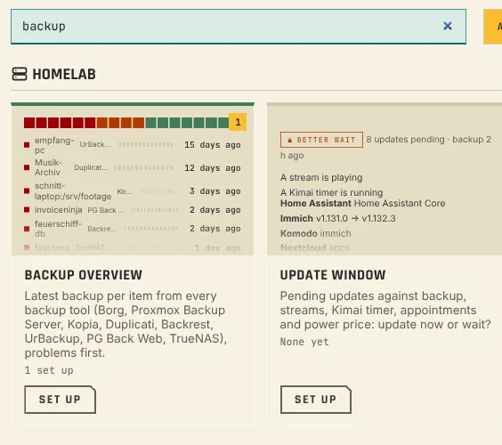
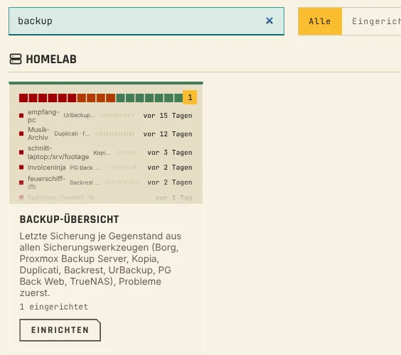
One backup overview across all tools (demo data)Eine Backup-Übersicht über alle Werkzeuge (Demodaten) 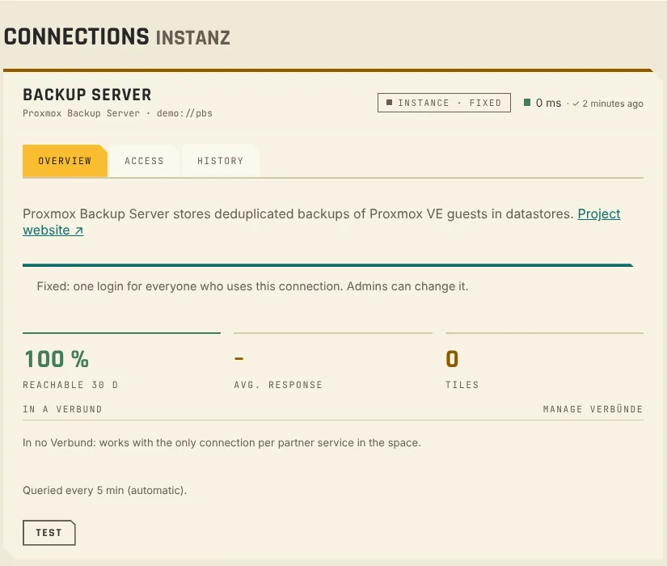
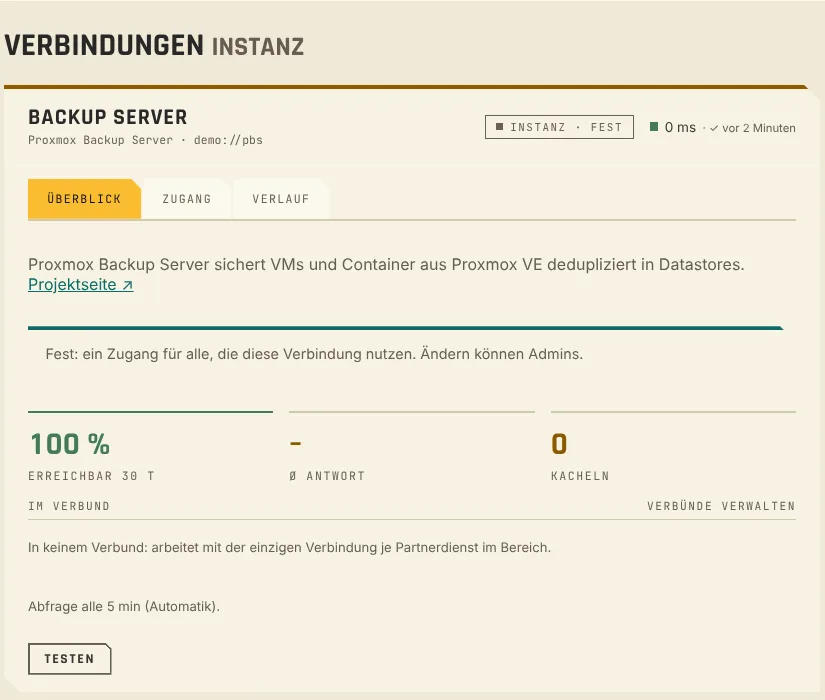
A connection as a record with tabs (demo data)Eine Verbindung als Akte mit Reitern (Demodaten) 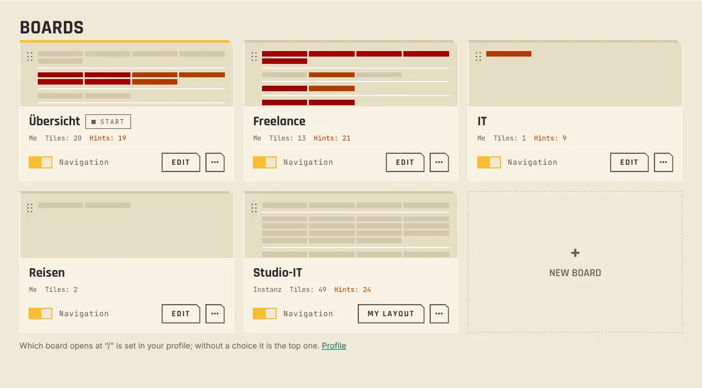
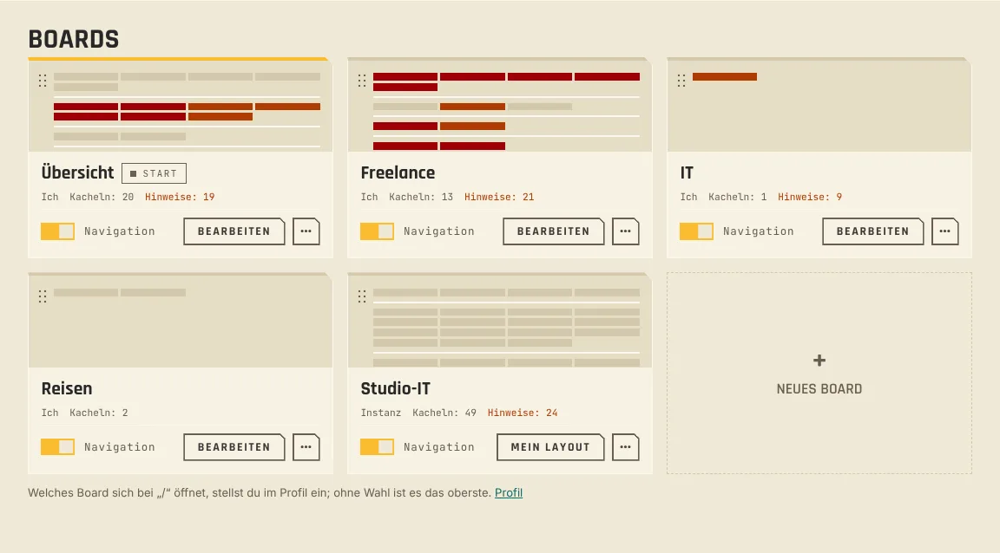
Boards as cards (demo data)Boards als Karten (Demodaten) 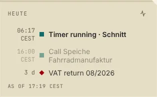
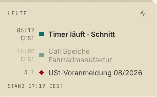
Times name the server's zone when the browser is elsewhereUhrzeiten nennen die Zone des Servers, wenn der Browser woanders ist All changes since 0.5.0 →Alle Änderungen seit 0.5.0 →Backup toolsSicherungswerkzeugeBorg, PBS, Kopia, Duplicati, Backrest, UrBackup, PG Back Web, TrueNASBackupSourceone shape: item, last run, size, resulteine Form: Gegenstand, letzter Lauf, Größe, ErgebnisTiles and rulesKacheln und Regelnbackup overview, heartbeat vs. backup, update without backupBackup-Übersicht, Heartbeat gegen Sicherung, Update ohne Sicherung -
0.5.0
Every tile opens a detail dialog, the whole interface now comes from the Kante design system, and the database key is derived the hard way.Jede Kachel öffnet einen Detaildialog, die ganze Oberfläche kommt jetzt aus dem Designsystem Kante, und der Datenbankschlüssel wird aufwendig abgeleitet.
NewNeu
- A detail dialog for every tile: facts, charts with axes and hover values, and the hints that belong to the tile. Link tiles open theirs from the pulse icon.Ein Detaildialog für jede Kachel: Fakten, Diagramme mit Achsen und Werten beim Überfahren, dazu die Hinweise der Kachel. Link-Kacheln öffnen ihn über das Puls-Symbol.
- Maps in the Authentik dialog (where logins come from) and the Dawarich dialog (where you were).Karten im Authentik-Dialog (woher Anmeldungen kommen) und im Dawarich-Dialog (wo du warst).
- Kimai Lite is a full Kimai client: start, stop, edit and split time sheets; unknown tags are created before writing.Kimai Lite ist ein vollständiger Kimai-Client: Zeiten starten, stoppen, bearbeiten und teilen; unbekannte Tags werden vor dem Schreiben angelegt.
- Tandoor recipes, and an about page with version, build and licences.Rezepte aus Tandoor und eine Info-Seite mit Version, Build und Lizenzen.
ImprovedVerbessert
- Buttons, fields, dialogs, charts, chips and the clock come from Kante, the design shared by all shrippen projects, instead of Andon's own styles.Schaltflächen, Felder, Dialoge, Diagramme, Chips und die Uhr kommen aus Kante, dem gemeinsamen Design aller shrippen-Projekte, statt aus eigenen Styles.
- Large boards stay fast, also in edit mode. DNS answers are cached and job runs and tile refreshes are spread out, so a home resolver is not flooded.Große Boards bleiben schnell, auch im Bearbeitungsmodus. DNS-Antworten werden zwischengespeichert, Prüfläufe und Kachel-Aktualisierungen verteilt, damit ein Heim-Resolver nicht überläuft.
- The database key comes from Argon2id over MASTER_KEY and a random salt per install, instead of a single SHA-256. Existing databases move over at first start; guessable keys are refused.Der Datenbankschlüssel entsteht per Argon2id aus MASTER_KEY und einem zufälligen Salt je Installation statt aus einem einzigen SHA-256. Bestehende Datenbanken werden beim ersten Start umgestellt; erratbare Schlüssel werden abgelehnt.
FixedBehoben
rotate-keyskipped OAuth grants and clients, tile secrets and the OIDC secret; it now re-encrypts all of them.rotate-keyhat OAuth-Freigaben und -Clients, Kachel-Geheimnisse und das OIDC-Secret übersprungen; jetzt verschlüsselt es alle neu.
NoteBeachten
- Back up
andon.db.salttogether with the database. Without it the database cannot be opened; Andon's own backups carry it.andon.db.saltzusammen mit der Datenbank sichern. Ohne die Datei lässt sich die Datenbank nicht öffnen; Andons eigene Sicherungen enthalten sie.
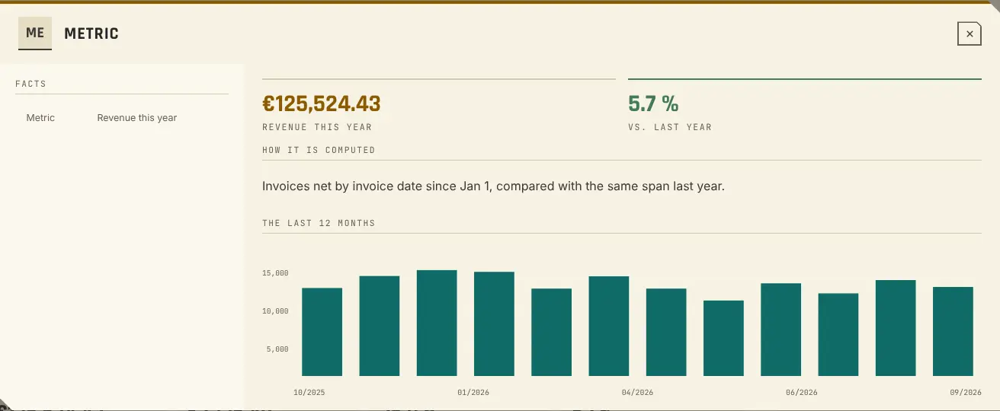
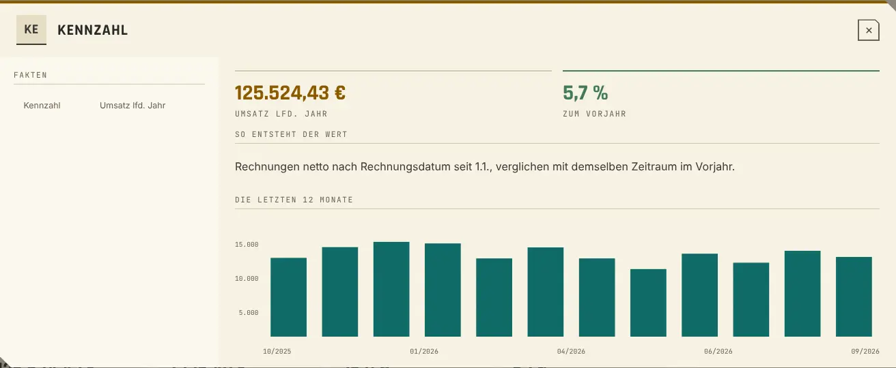
Detail dialog of a tile (demo data)Detaildialog einer Kachel (Demodaten) All changes since 0.4.0 →Alle Änderungen seit 0.4.0 →MASTER_KEYyour secretdein GeheimnisArgon2idwithandon.db.salt, slow on purposemitandon.db.salt, absichtlich langsamKeySchlüsselencrypts the database (Adiantum)verschlüsselt die Datenbank (Adiantum)
Older releasesÄltere Versionen
-
0.4.0
The first release under the name Andon.Die erste Version unter dem Namen Andon.
NewNeu
- Container images:
latestfrom release tags,edgefrom main.Container-Images:latestaus Release-Tags,edgeaus main. - Tests for every package.Tests für jedes Paket.
FixedBehoben
- Four bugs from the first review, and a polished interface.Vier Fehler aus der ersten Durchsicht, dazu eine überarbeitete Oberfläche.
- Container images: